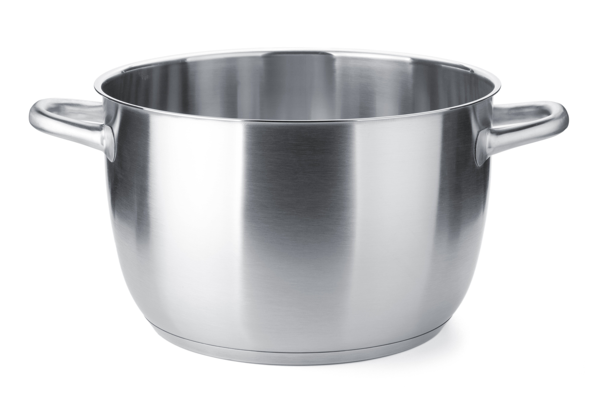
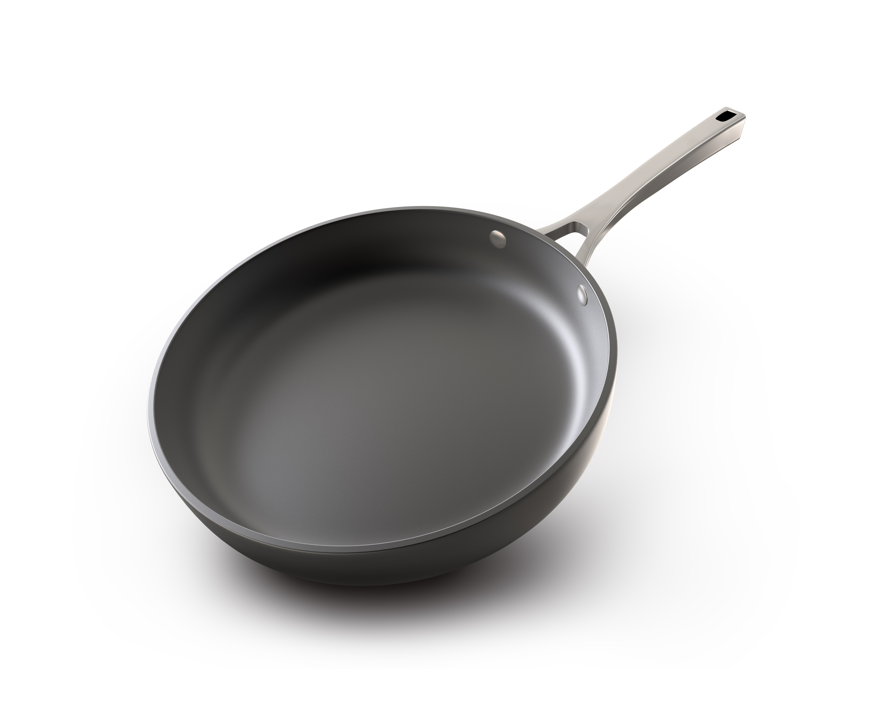
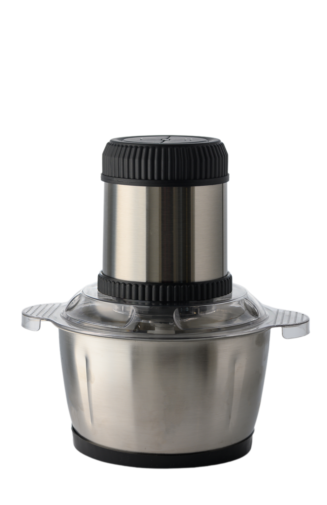
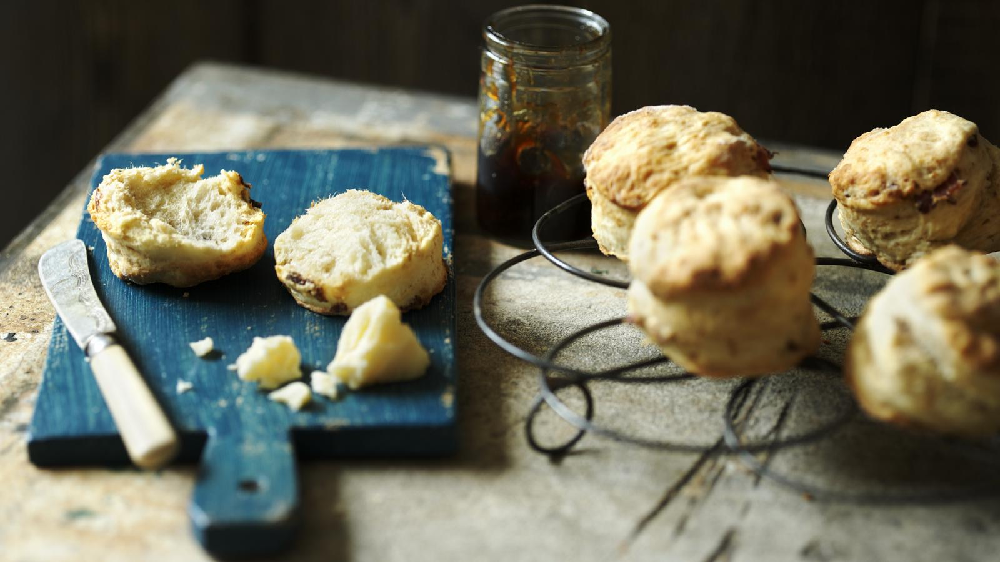

Cremet pasta med broccoli, ærter og citron
3,1 (96 anmeldelser)
Aftensmad

Lavet af Marcus Wareing


Glutenfri
Sundt
30 minutter
30-60 minutter
90 minutter
Kyllinge- og broccolipasta i ovn er et lækkert og mættende valg til en sund aftensmad. Retten kombinerer saftig kylling, broccoli og pasta i en cremet ovnret, der giver masser af smag og næring. Den er særligt velgnet til dig, der ønsker et balanceret måltid som en del af en kost på 1.200-1.500 kalorier om dagen



Har du lyst til at give pasta retten en mere fyldig smag, kan du altid bruge en let cremefraiche og eller fløde i stedet for mælken. Dette giver retten en rundere smag og er super lækker!
8/2/2026
Familie for mig er noget af det vigtigste i mit liv. På anden pladsen kommer mad, og kombinationen giver en fantastisk stemning. Dette er historien om hvordan jeg fandt denne fantastiske kyllinge pasta, som bragte hele min familie sammen over et bord.
Italiensk mad
Har du forslag til mulig erstatnings ingredients eller bare spørgsmål til opskriften. Så kan du sende en mail herunder.
3,1 (96 anmeldelser)
Aftensmad
Lavet af Marcus Wareing


4,4 (94 anmeldelser)
Aftensmad

Lavet af Marcus Wareing